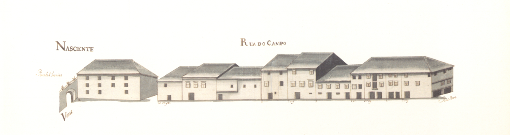

Rua do Campo (Página 1)

Rua do Campo - vista nascente. Rua do Campo - vista poente. Informações sobre a rua:
Pequena rua, entre a "rua Nova" e a "Porta de S. Francisco", existente ja na Idade Media, entao com o nome de "rua Nova".
Actualmente toda esta rua tem feição diferente: a "porta de S. Francisco" foi demolida em data que desconhecemos e a parte central do lado Nascente
foi destruida em 1754 para aí se construir o novo "edificio da Camara Municipal" (so concluido em 1865) que ficou com a fachada traseira para esta rua.
O lado Sul foi integralmente perdido no final da decada de oitenta do seculo passado, quando se fez o alargamento e rectificação do traçado desta artéria.
Se, na Idade Media, esta rua teve, possivelmente, grande importância (tinha uma porta num dos seus extremos, dava imediato acesso a saída de "Braga" para "Prado",
"Ponte de Lima" e "Valença", atraves da "rua da Conega"), no sec. XVIII, o seu peso deve ter decaído bastante.
A designagao de "Campo" podera datar talvez do "primeiro
quartel" do sec. XVI, quando passou a estar em ligação com o "campo da Vinha", então aberto.
Das 10 casas do lado Nascente e 14 do Poente, apenas três deste lado
pertenciam ao Cabido.
A "rua do Campo" é um troço da actual "rua D. Frei Caetano Brandao", entre a "rua D. Diogo de Sousa" e o "largo Conselheiro Torres e Almeida",
tendo recebido esta designação na sessão da Câmara de 28.07.1890.
Casas
| Descrição |
|
1 -
Enfiteuta: Domingos Dias
Foro: 620 reis e galinhas
Desde o ano de 1719 que os nº 1 e 2 se encontravam unidos. A frontaria que dá para a "Rua Nova de Sousa" corresponde ao nº15 da dita rua e é foreira à comenda de "São Pedro de Merelim."
|
| |
2 -
Enfiteuta: Domingos Dias
Foro: 270 reis e 2 galinhas
Desde o ano de 1719 que os nº 1 e 2 se encontravam unidos. A frontaria que dá para a "Rua Nova de Sousa" corresponde ao nº15 da dita rua e é foreira à comenda de "São Pedro de Merelim."
|
| |
3 -
Enfiteuta: Os herdeiros do Padre Domingos Tinoco
Foro: 150 reis e 2 galinhas
Confronta, de Sul, com parte da mesma casa foreira à Confraria da Trindade, antiga Confraria da Companhia de Jesus e, de Norte, com casa dízima a Deus
|
|